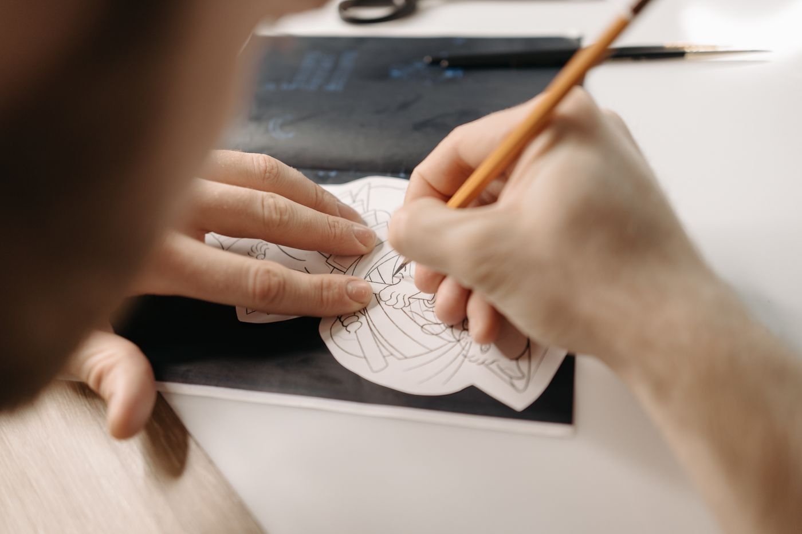

Ink
Pick a color, a weight, and a rhythm. Solid, broken, or dotted. The stroke can sit steady, or wobble like a fast pencil.
Portfolio studio
Quire is a quiet board for boxes, arrows, handwriting, and sticky notes. Strokes look sketched. The page can be white, blue, or night. The drawing stays in this browser, with no account and no room full of other cursors.
Say it on paper, then keep the sheet.

Quire is not a studio suite. It is the part of a meeting where someone reaches for paper: a box, an arrow, a word, a note stuck to the side.
Pick a color, a weight, and a rhythm. Solid, broken, or dotted. The stroke can sit steady, or wobble like a fast pencil.
The sheet color is yours. Day or dusk changes the chrome around it. The drawing itself keeps the paper you chose.
A refresh does not throw the board away. It lives in this browser. Pass a snapshot when someone else should have a copy.
Explain a system with boxes and arrows. Lay out a talk as Folio pages. Keep a working board for the messy middle. Quire is the quiet place those sketches live before the slide deck gets polished elsewhere.
Selection, shapes, arrows, lines, ink, text, sticky notes, and an eraser. Lock a tool when you are laying down a dozen of the same thing. Pan with the hand, the space bar, or the middle mouse button.
Save a JSON snapshot, export a picture on the paper color you picked, or find a word already written on the sheet. Undo still reaches backward if you clear the board by mistake. There is no chat room hiding behind the menu.
Open it, draw one box, and leave the rest for later.